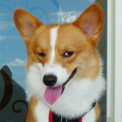
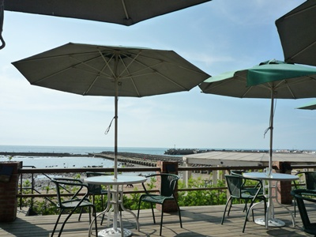
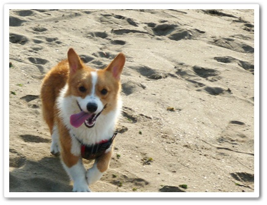
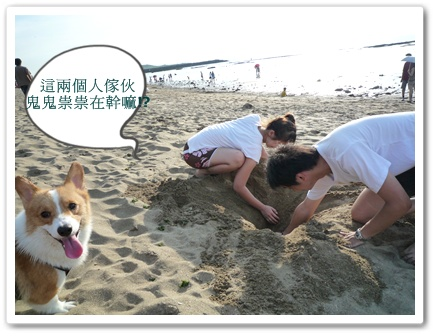
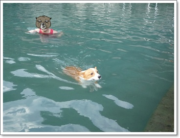
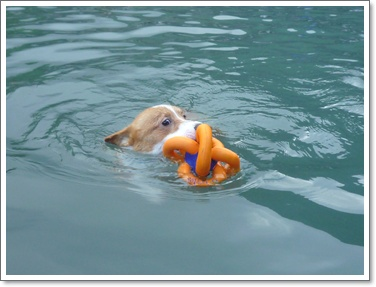
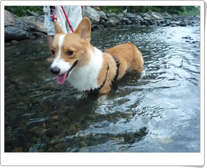

距離上篇又一個月了!!哈哈

(摩卡卡：我的粉絲都被麻麻你害得走光光了啦!)
SO今天要來報告一下摩卡卡暑假都在幹嘛!?
除了玩水就是玩水啦!!今年夏天真的豁出去了
一直往戶外跟海邊衝!

前陣子看了狗友的分享，帶卡卡去三芝 WE LOVE
結果去沒訂位只剩戶外的位子可以坐！

天啊！真的是熱到爆了！摩卡卡在戶外好可憐根本待不住
一直假藉找臘腸狗狗玩其實是想進去涼快
麻麻我當然也假藉抓狗名義進去賴著吹冷氣啦！

不過室內的位子真的不多，至於那天的服務不是太優！
可能人多忙，跟服務生要杯水要很久，要MENU也要很久
有點火大！

因為太熱只點了pizza跟飲料，幸好食物還蠻好吃的!

之後就衝去海邊嘍！摩卡卡只要碰到沙灘就瘋了
超 high 的~會一直瘋狂來回奔跑!

不過那邊玩水的地方有好多石頭，不太好走！
也有很多小朋友怕狗，我們還被一個媽媽要求不要在他小孩附近玩！
所以只好玩沙了！好可年.....卡卡又沒有兇兇!他ｘ的
不過玩沙當也要有目的嘍!就是埋狗~~哈哈

結果跟哥哥挖了老半天~ 
damn~摩卡卡臉還是如此的燦爛~完全沒有驚恐！
(摩卡卡：廢話！這高度想埋我~泥真以為我很矮歐！)

反正都挖了~就算只能埋到屁股還是要埋！哈哈
還難得跟卡卡拍了帥帥照！

因為淺水灣不好玩，之後轉戰屬於卡ㄋㄟ少爺的水床-->白沙灣
吼！不過那次去也很倒楣，浪太大了！

人都站不穩了，很怕卡卡被流走！摩卡拔的眼鏡還被浪打飛失踨了！
反正沒什麼玩到！浪太大摩卡也怕！

近期咧！我們也衝去了宜蘭的攔沙壩歐！
行動力超強的啦！哈哈
從我們家開車去很快！大概半小時就到了！

第一次看到欄沙壩，酷！總共有三個池可以玩！人也挺多的
水看起來好乾淨！而且宜蘭人真好！都對摩卡卡很友善
(雖然我也不確定他們是不是宜蘭人..哈哈)

走下高高的樓梯就可以下水了！
結果摩卡拔一下水就"加冷筍"了! 哈哈哈
他說水超冰的，所以先幫摩卡卡潑水適應一下！

卡卡這次挑戰跳水，一開始超抖的他！
不過一直叫他名字他就會壯大膽試試，很乖！

還學會了邊游泳邊玩玩具，之前只能專心游泳無法分心！
一開始叫他咬回來，咬了一次沒咬到就會放棄！
抓到技巧後，就很順利的可以把阿飄撿回來！
這名字取的太好了....

不過現在七月了，叫起來就怪怪的說!!

在停車場旁邊還有一片的草地可以跑跑
很乾淨，看起來是有在整理的地方！

往草地走過去還有一條冰涼的小溪可以玩水，淺淺的！
這裡真很不賴，水陸都有！

放高高大聲說~下次還要來!
誰要去的約我約我!!摩卡卡也要跟

今年夏天真的是太陽光了我！
發現養卡卡之後太陽公公跟我很麻吉，曬得我烏七麻黑的！
BTW
HAPPY小妞..我麻麻欠的愛狗夢樂園玩水篇
她說她會補，請給她一點時間!!